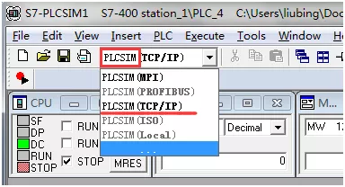
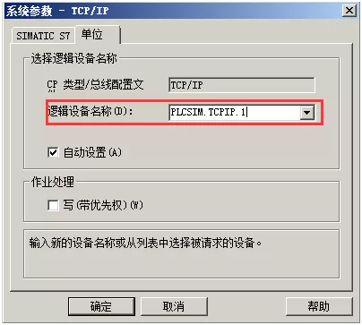
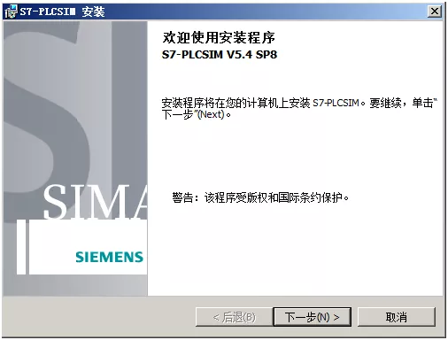
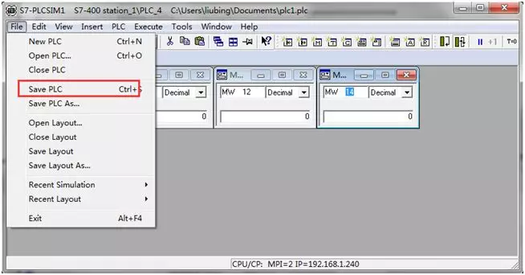
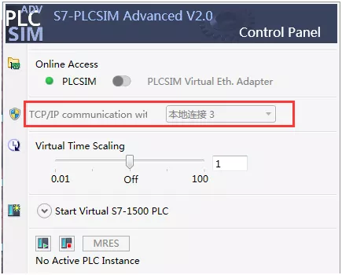

1.问题描述
相信很多初学者做工程时会碰到这样的问题：由于WINCC安装在一台电脑，STEP 7或STEP 7 (TIA Portal)安装在另外一台电脑（如工程师站），想用 WINCC连接PLC仿真软件S7-PLCSIM，来进行项目测试，是无法实现的。
因为WINCC是使用本机的PLCSIM接口来访问S7-PLCSIM（如TCP/IP连接PLCSIM.TCPIP.1，PLC没有配置的端口在S7-PLCSIM中显示为灰色无法选择）。
然而PLCSIM是内部接口只能在本机上访问。


2.解决方法
2.1方法
在工程中，运行WINCC的非工程师站一般是不会安装STEP 7的，那怎么解决上面的问题。其实也简单，把对应版本的S7-PLCSIM安装在WINCC的机器上就可以了。
以博途V14SP1为例，如果仿真S7-300/400，安装S7-PLCSIM V5.4SP8 （单独安装包为：博途仿真V14SP1安装包\InstData\PLCSim）即可。

因为S7-PLCSIM V5.4SP8本身就很小（安装空间只需几十MB），也不会对安装的机器造成影响，即使要卸载也很容易。
2.2操作步骤
在工程师站打开S7-PLCSIM仿真器，先把要测试的PLC程序下载到仿真器，然后保存为*.plc文件。

再把保存的文件拷贝到WINCC机器上，用S7-PLCSIM打开，就可以和WINCC进行测试了。
3.其它
而对于S7-1500 PLC，可以使用S7-PLCSIM Advanced进行仿真，它既可以通过内部接口连接也可以通过外部接口连接，所以就不存在上面的问题了。
